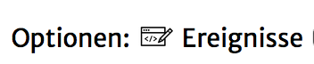
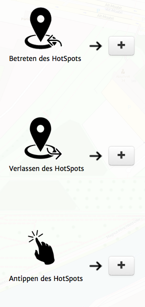
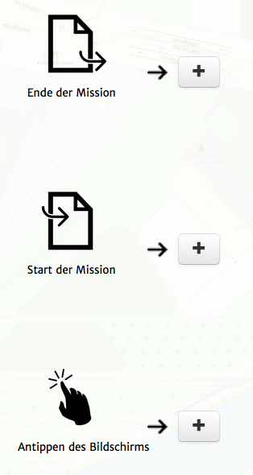
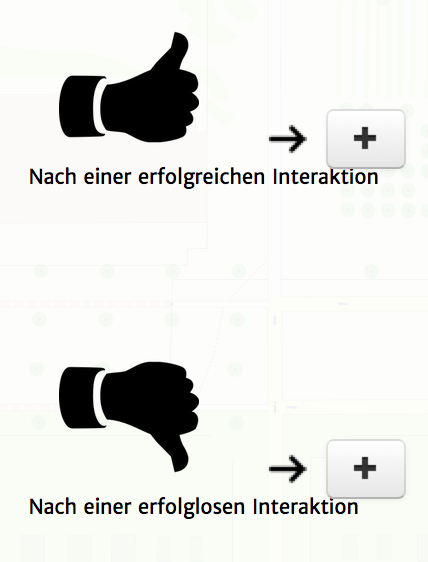
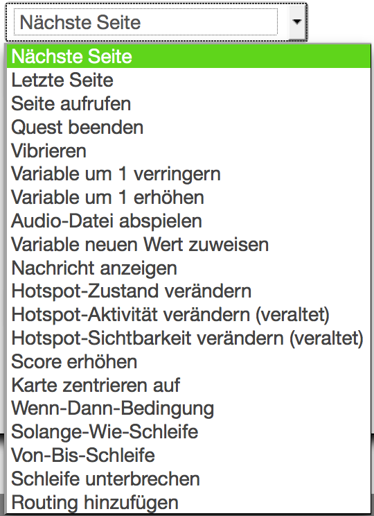

Sowohl Seiten, als auch Hotspots haben Ereigniss-Trigger. Du kannst sie erreichen, indem du den Ereignisse-Link im jeweiligen Fenster benutzt:

Folgende Triggertypen gibt es:
|  | HotspotsBetreten des Hotspots: wird getriggered, wenn der Spieler den Radius des Hotspots betritt. Verlassen des Hotspots: wird getriggered, wenn der Spieler den Radius des Hotspots verlässt. Antippen des Hotspots: wird getriggered, wenn der Spielder den Hotspot in der Kartenansicht-Seite antippt. |
|  | SeitenEnde der Seite: wird getriggered, wenn die Seite beendet wird. Start der Seite: wird getriggered, wenn die Seite gestartet wird. Antippen des Bildschirms: wird getriggered, wenn der Spielder den Bildschirm antippt. (wird aktuell ignoriert.) |
|  | Seiten mit ErfolgenNach einer erfolgreichen Interaktion: wird getriggered, wenn die Seite erfolgreich abgeschlossen wird (z.B. richtige Antwort gewählt) Nach einer erfolglosen Interaktion: wird getriggered, wenn die Seite erfolglos abgeschlossen wird (z.B. false Antwort gewählt)
|
Mit einem Klick auf den "+"-Button hinter dem gewünschten Trigger, kannst du
für den Trigger eine Aktion hinzufügen.
Diese kannst du aus einer langen Liste von möglichen Aktionen auswählen. Auf dieser Seite kannst du mehr über alle Aktionstypen lesen.
